Gestione Cantieri è un gestionale che tiene sotto controllo l'andamento economico e produttivo delle commesse edili: quanto è stato prodotto, quanto è stato fatturato, quante ore e quanti costi sono stati consumati, e se alla fine la commessa lascia un utile.
Si usa dal browser (Chrome, Edge, Firefox, Safari), da qualunque computer collegato a internet: non c'è nulla da installare.
| Idea | Che cosa significa |
|---|---|
| Una sola fonte per ogni dato | La commessa nasce una volta sola in Anagrafica e viene richiamata ovunque come CODICE | CLIENTE | CANTIERE. Cliente e cantiere non si riscrivono mai altrove. |
| Esercizio in gestione | L'applicazione lavora su un anno alla volta (lo si legge in basso a sinistra: «Esercizio 2026»). Movimenti e costi si registrano solo con data in quell'anno. |
| Cumulativo = saldo + movimenti | Il valore cumulato di una commessa è il saldo iniziale al 31/12 dell'anno precedente più i movimenti dell'esercizio. Le commesse nate nell'anno non hanno saldo. |
| Costo effettivo | Ore effettive × costo strutturale orario (un unico parametro aziendale, 45,79 €/h nell'esempio) + costi diretti. |
| Niente si cancella | Movimenti, costi e saldi si annullano con un motivo e restano tracciati. Ogni modifica viene registrata con autore, data e valore precedente. |
| Gli alert li calcola il programma | Ogni commessa riceve da sola un livello: regolare, incompleto, attenzione, critico. Non si impostano a mano. |
Gestione Cantieri si apre dal browser, come un sito: basta l'indirizzo che ti è stato comunicato.
La finestra è divisa in due: a sinistra la barra blu con il menu e l'utente, a destra la pagina di lavoro.
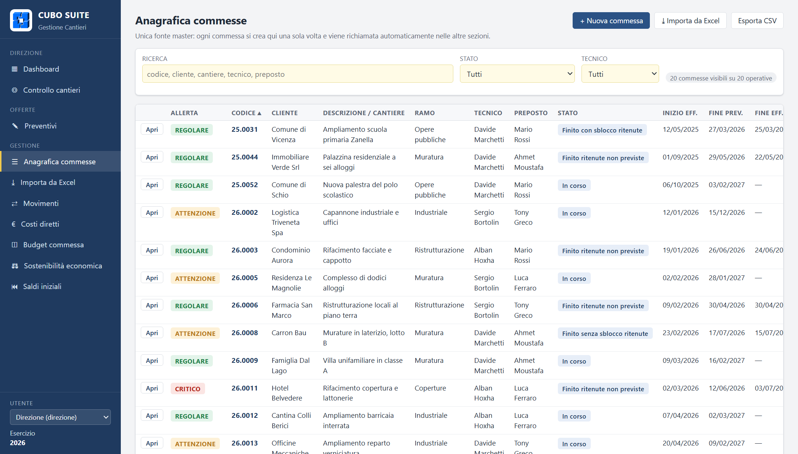
| Gruppo | Pagina | A che cosa serve |
|---|---|---|
| Direzione | Dashboard | Lo stato del portafoglio: alert, fatturato, redditività, surplus economico, utili |
| Controllo cantieri | La situazione reale di ogni commessa e il costo mensile | |
| Offerte | Preventivi | Ipotesi di commessa con verifica di sostenibilità |
| Gestione | Anagrafica commesse | L'elenco master delle commesse; da qui si apre la scheda di ciascuna |
| Importa da Excel | Caricamento e aggiornamento in blocco da un file .xlsx | |
| Movimenti | Archivio di SAL, fatture, ritenute, ore e perdite | |
| Costi diretti | Archivio dei costi specifici delle commesse | |
| Budget commessa | Ore e costi diretti previsti | |
| Sostenibilità economica | Confronto fra prezzo e prezzo minimo sostenibile | |
| Saldi iniziali | Valori già maturati al 31/12 dalle commesse pregresse |
In fondo alla barra laterale la tendina Utente permette di scegliere con quale ruolo lavorare. Il menu mostra solo le pagine consentite a quel ruolo.
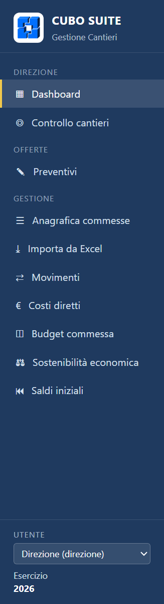
Direzione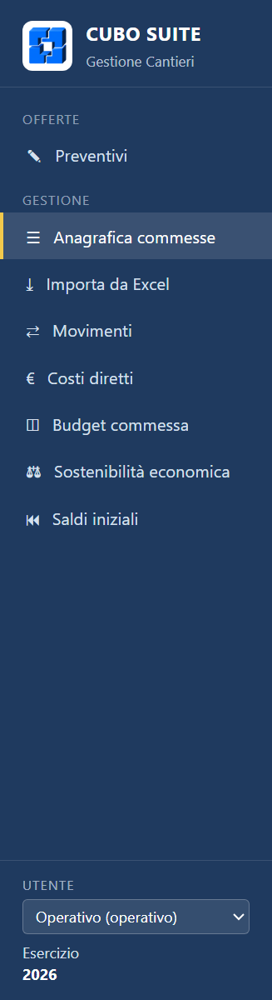
Operativo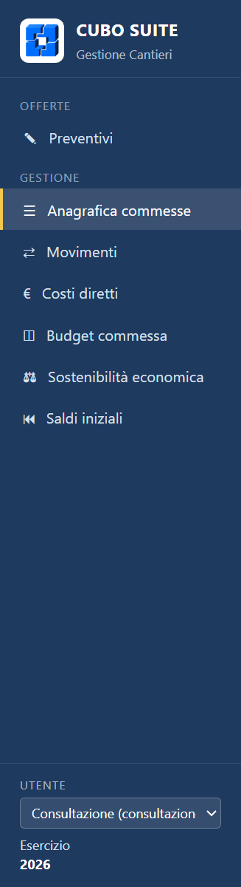
Consultazione| Ruolo | Si apre su | Che cosa può fare |
|---|---|---|
| Direzione | Dashboard | Tutte le operazioni sui dati: commesse (anche eliminarle), budget, saldi iniziali, note direzionali, movimenti, costi, preventivi |
| Operativo | Anagrafica commesse | Crea e modifica commesse, movimenti, costi diretti, fasi del Gantt e preventivi (conversione compresa); indica il ricarico della verifica di sostenibilità e la data «aggiornato al». Non modifica budget e saldi, non vede le pagine di Direzione |
| Consultazione | Anagrafica commesse | Sola lettura ed esportazioni |
In ogni tabella e in ogni scheda lo sfondo della cella dice da dove arriva il dato:
I livelli di alert usano sempre gli stessi quattro colori:
REGOLARE tutto a posto · INCOMPLETO mancano dei dati · ATTENZIONE un problema di andamento · CRITICO un problema grave. Il significato preciso è nel capitolo 15.
Inserimenti e modifiche avvengono in una finestra sopra la pagina. I campi con l'asterisco rosso sono obbligatori. Premendo Salva il programma controlla i dati:
Un preventivo è un'ipotesi di commessa: un'offerta non ancora accettata. Vive in un archivio separato, non entra in Anagrafica né nelle dashboard, e ha un solo scopo: verificare se il prezzo proposto è sostenibile.
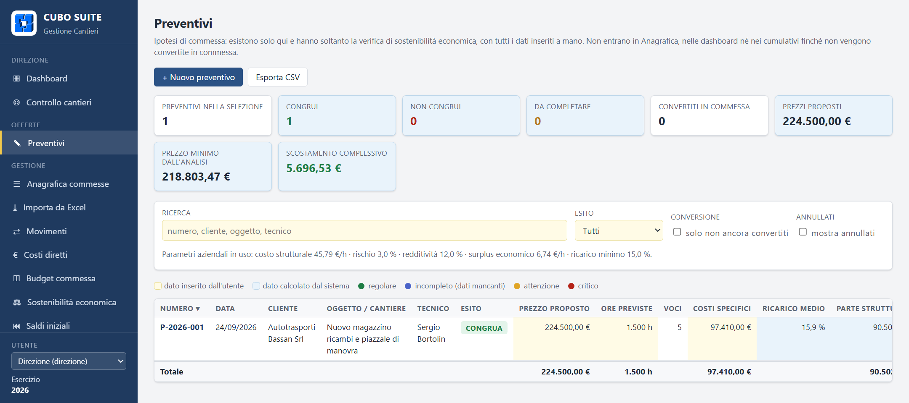
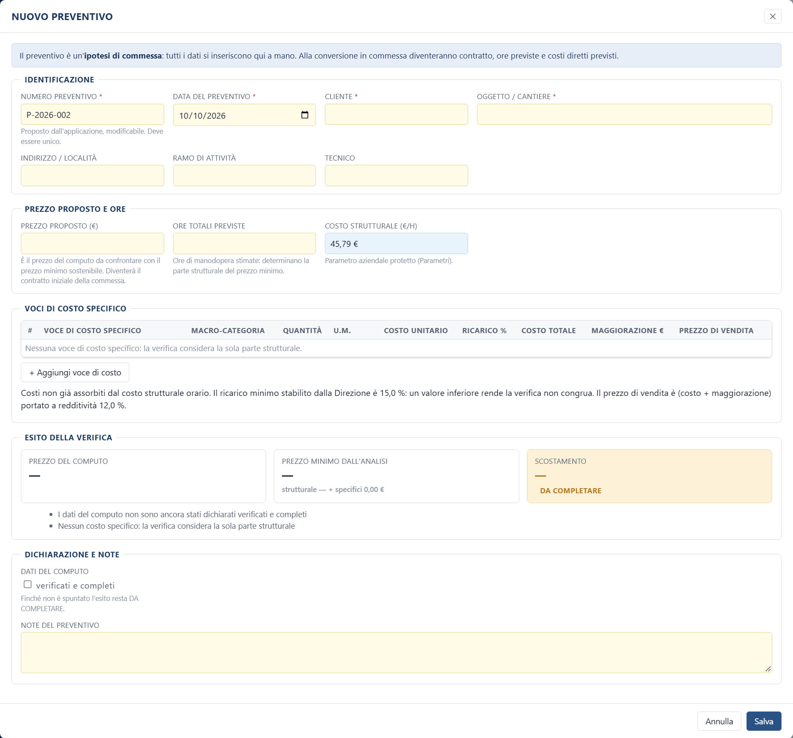
| Esito | Significato |
|---|---|
| CONGRUA | Il prezzo proposto copre il prezzo minimo sostenibile |
| NON CONGRUA | Il prezzo proposto è sotto il prezzo minimo: così la commessa non regge |
| NON CONGRUO | Almeno un ricarico è sotto la soglia minima fissata dalla Direzione (15 % nell'esempio) |
| DA COMPLETARE | Mancano dati oppure non è stata spuntata la dichiarazione «verificati e completi» |
Come si forma il prezzo minimo è spiegato nel capitolo 10.
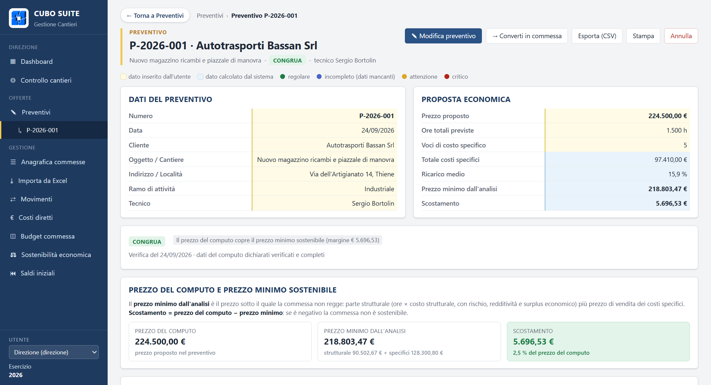
Quando l'offerta viene accettata, dalla scheda del preventivo premi → Converti in commessa, indica il codice commessa definitivo e conferma con Crea la commessa.
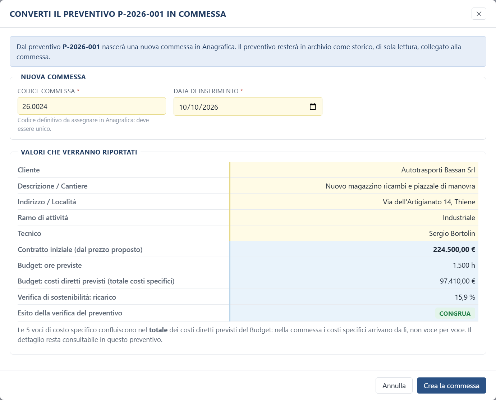
È l'elenco master. Ogni commessa si crea qui una volta sola; tutte le altre pagine la richiamano.
Premi + Nuova commessa in alto a destra.
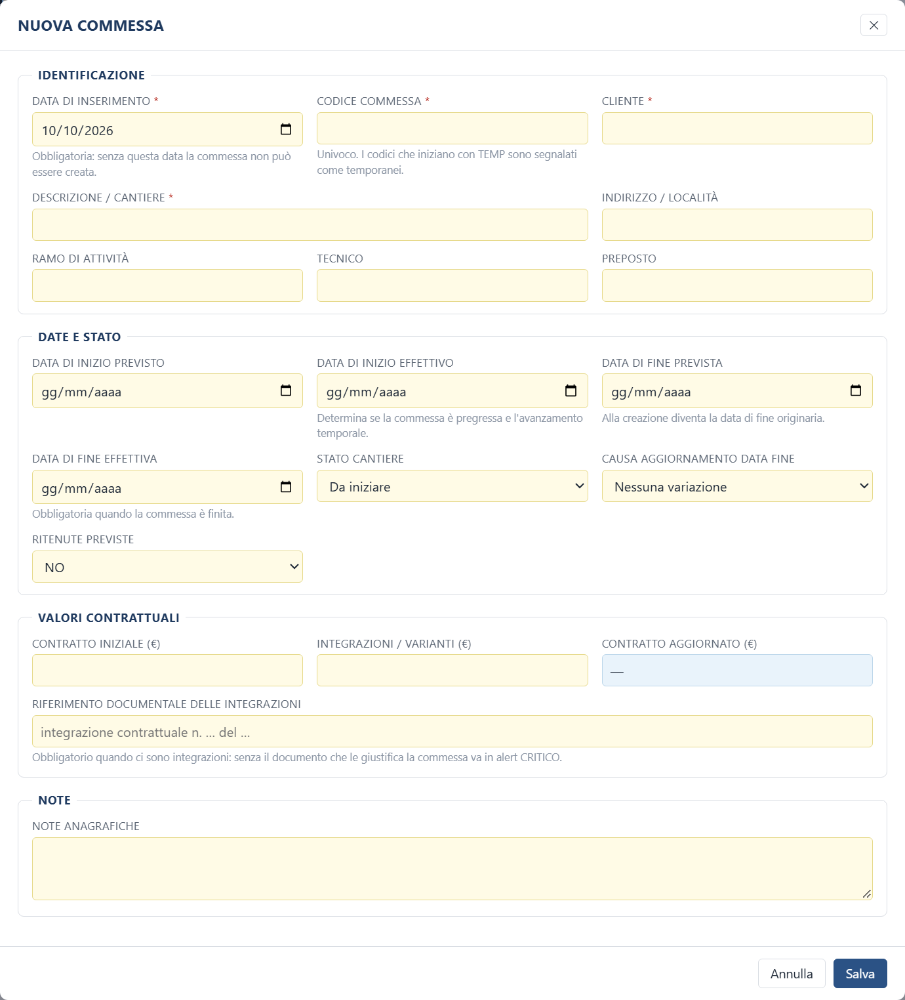
| Campo | Che cosa indicare |
|---|---|
| Data di inserimento * | Obbligatoria: senza, la commessa non si crea |
| Codice commessa * | Deve essere unico. Se non è ancora noto si può usare un codice che inizia con TEMP: la commessa verrà segnalata come incompleta finché non riceve il codice definitivo |
| Cliente * e Descrizione / Cantiere * | Formano, con il codice, l'etichetta usata in tutta l'applicazione |
| Ramo, Tecnico, Preposto | Mentre si scrive vengono proposti i valori già in elenco |
| Data di inizio effettivo | Decide se la commessa è pregressa (iniziata prima del 1° gennaio dell'esercizio) e fa partire l'avanzamento temporale |
| Data di fine prevista | Alla creazione viene memorizzata anche come fine prevista originaria. Se in seguito la si sposta, va indicata la causa: nessuna variazione, proroga/sospensione autorizzata, ritardo produttivo aziendale, altra causa |
| Data di fine effettiva | Obbligatoria quando lo stato è uno dei «Finito…» |
| Stato cantiere | Da iniziare · In corso · Quasi finito · Finito ritenute non previste · Finito con sblocco ritenute · Finito senza sblocco ritenute |
| Ritenute previste | SI se il contratto prevede ritenute a garanzia |
| Contratto iniziale e Integrazioni / varianti | Il contratto aggiornato è la loro somma, calcolata dal programma |
| Riferimento documentale delle integrazioni | Obbligatorio se ci sono integrazioni: senza il documento che le giustifica la commessa va in alert CRITICO |
La casella Ricerca filtra per codice, cliente, cantiere, tecnico e preposto; le tendine Stato e Tecnico restringono l'elenco. Un clic su Apri o sul codice porta alla scheda della commessa (capitolo successivo).
Dalla scheda della commessa, il pulsante rosso Elimina / annulla (Direzione) apre una finestra con due strade.
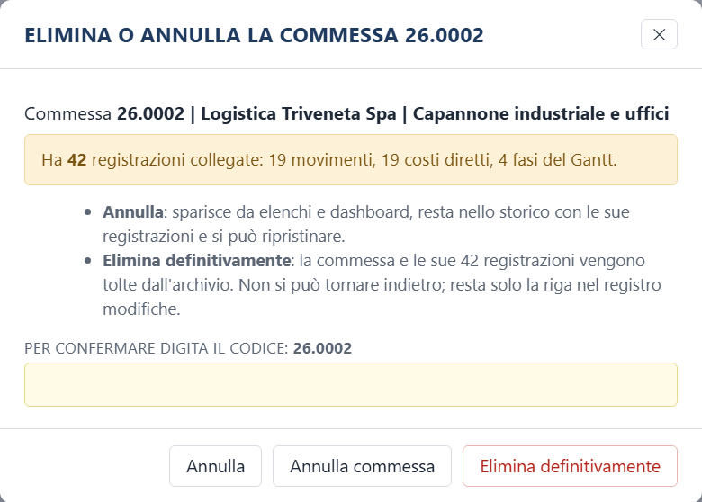
È il cuore dell'applicazione: una pagina unica che raccoglie tutto ciò che riguarda una commessa, divisa in dieci schede.
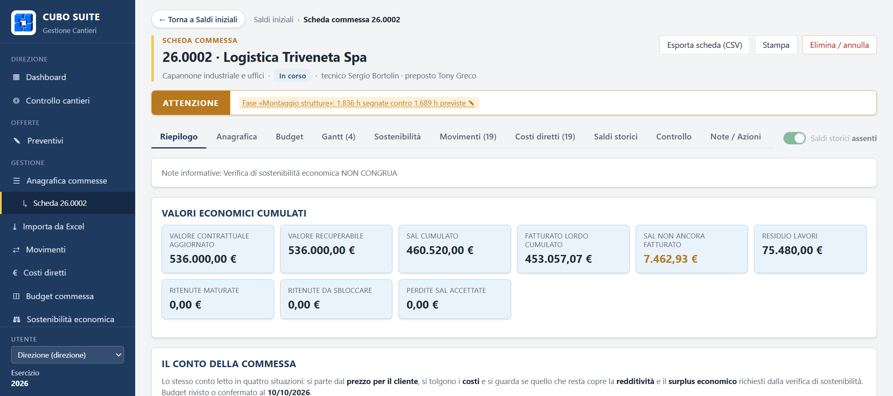
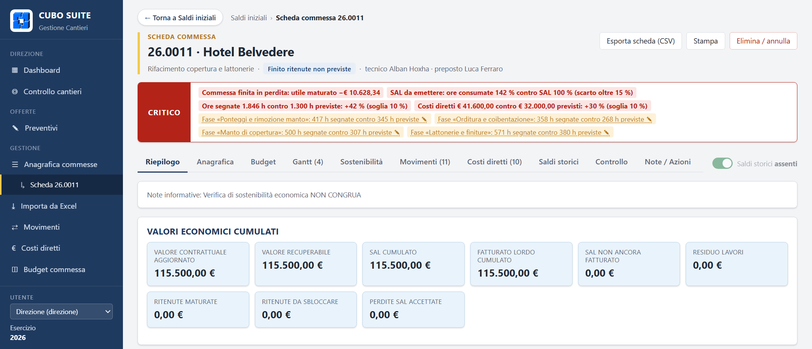
La prima scheda risponde alla domanda «come sta andando?». Dopo i valori economici cumulati (contratto, SAL, fatturato, residuo lavori, ritenute, perdite) presenta Il conto della commessa.
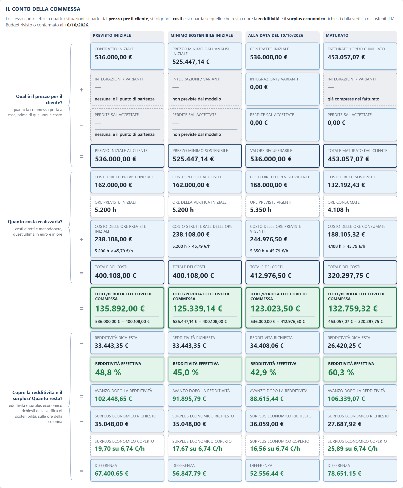
Le quattro colonne sono quattro momenti della stessa commessa:
| Colonna | Che cosa rappresenta |
|---|---|
| Previsto iniziale | Contratto iniziale e budget iniziale: com'era pensata alla firma |
| Minimo sostenibile iniziale | Il prezzo minimo calcolato dalla verifica di sostenibilità: sotto questo valore la commessa non regge |
| Alla data | Contratto aggiornato (integrazioni e perdite accettate) e budget vigente |
| Maturato | Il consuntivo: fatturato lordo, costi sostenuti, ore consumate fino a oggi |
Le tre domande, dall'alto in basso: qual è il prezzo per il cliente? · quanto costa realizzarla? (costi diretti + ore × costo orario) · copre la redditività e il surplus economico, e quanto resta? La riga verde Utile/perdita effettivo di commessa è la differenza fra le prime due.
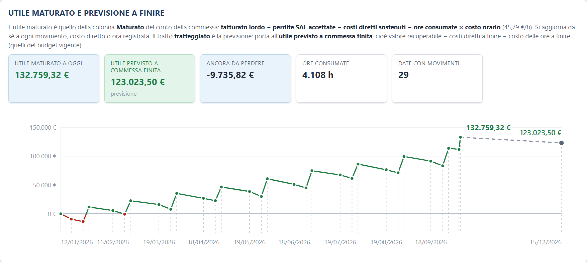
Completano il Riepilogo il confronto con la verifica di sostenibilità, il riquadro Ore − SAL (ore consumate % meno SAL %: se positivo si stanno consumando più ore di quanto si è prodotto), i costi diretti rispetto al budget e la tabella «I numeri del grafico».
Tutti i dati inseriti alla creazione, più i valori calcolati (commessa pregressa, contratto aggiornato, fine prevista originaria). Si corregge con ✎ Modifica anagrafica.
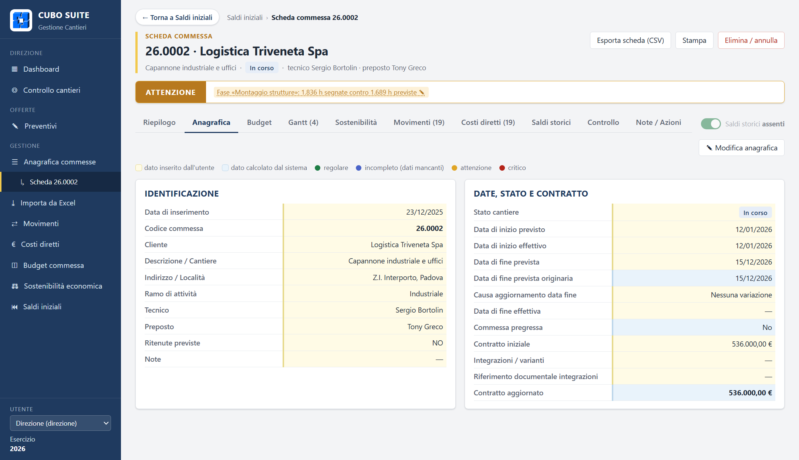
Mostra ore e costi diretti previsti, iniziali e aggiornati, e il confronto con il consuntivo (ore e costi residui, sforamenti, percentuali consumate). La modifica è descritta nel capitolo 9.
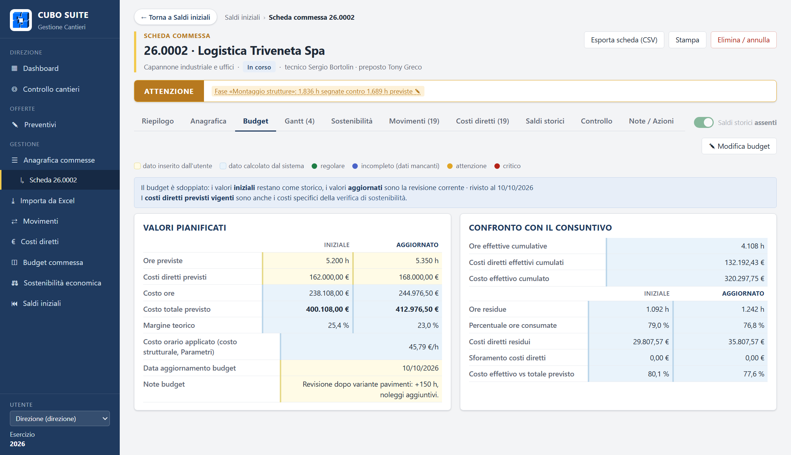
Il cronoprogramma della commessa, diviso in fasi di lavoro. Per ogni fase una barra chiara (previsto) e una colorata (effettivo): verde se nei tempi, rossa se in ritardo, tratteggiata se in corso. La linea rossa verticale è oggi.
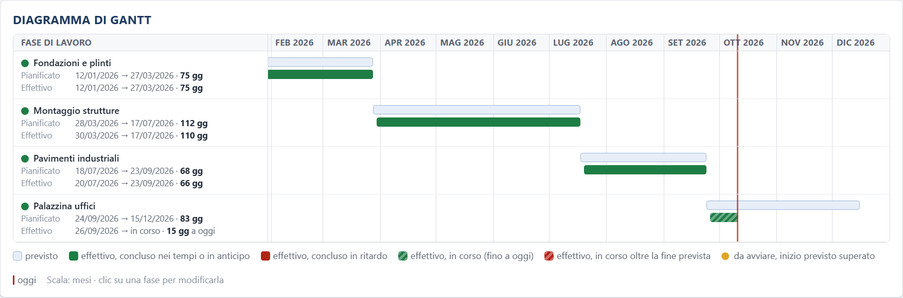
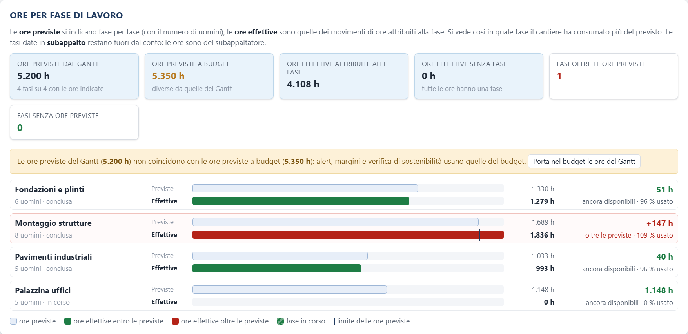
Per aggiungere una fase premi + Nuova fase:
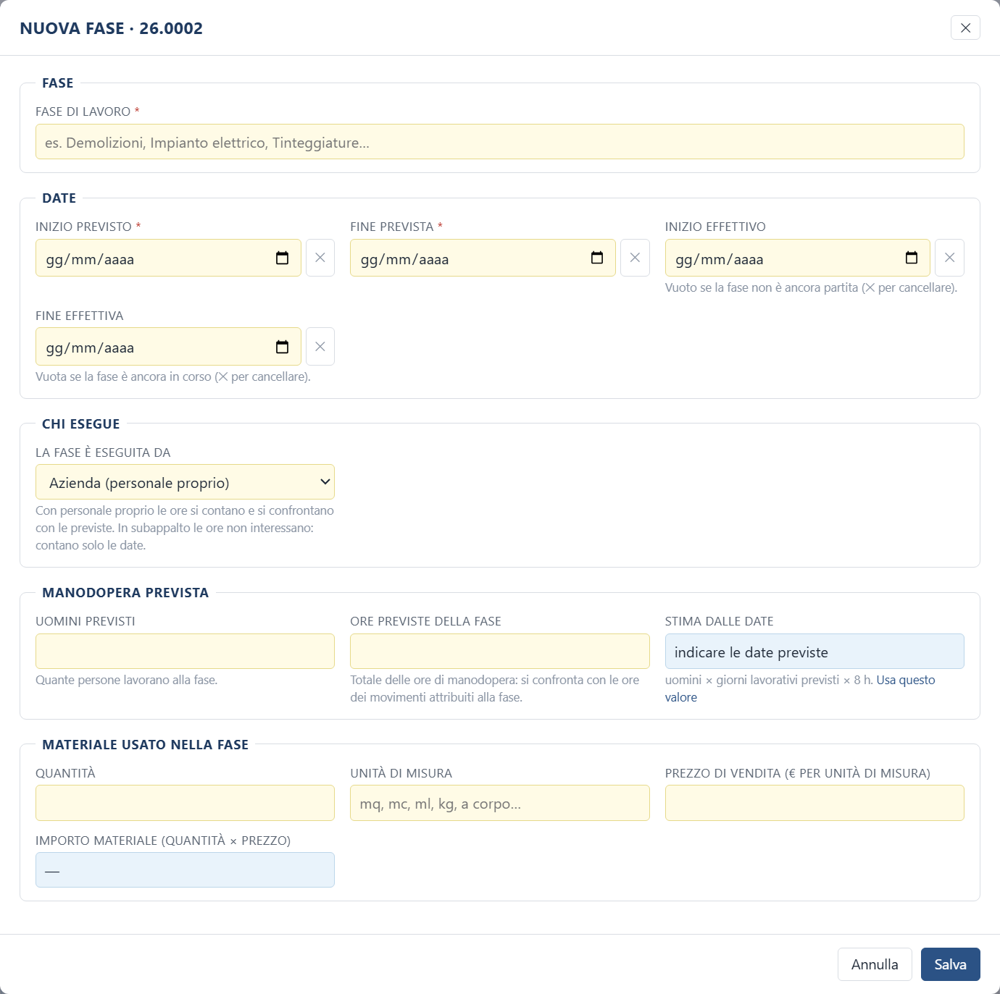
La verifica di sostenibilità della commessa in tre versioni (iniziale, aggiornata, maturato consuntivo), con la formazione del prezzo minimo riga per riga. Vedi il capitolo 10.
Le stesse tabelle delle pagine generali, ma limitate a questa commessa, con i pulsanti + Nuovo movimento e + Nuovo costo diretto già impostati sulla commessa aperta. Il numero fra parentesi nel titolo della scheda è il conteggio delle registrazioni.
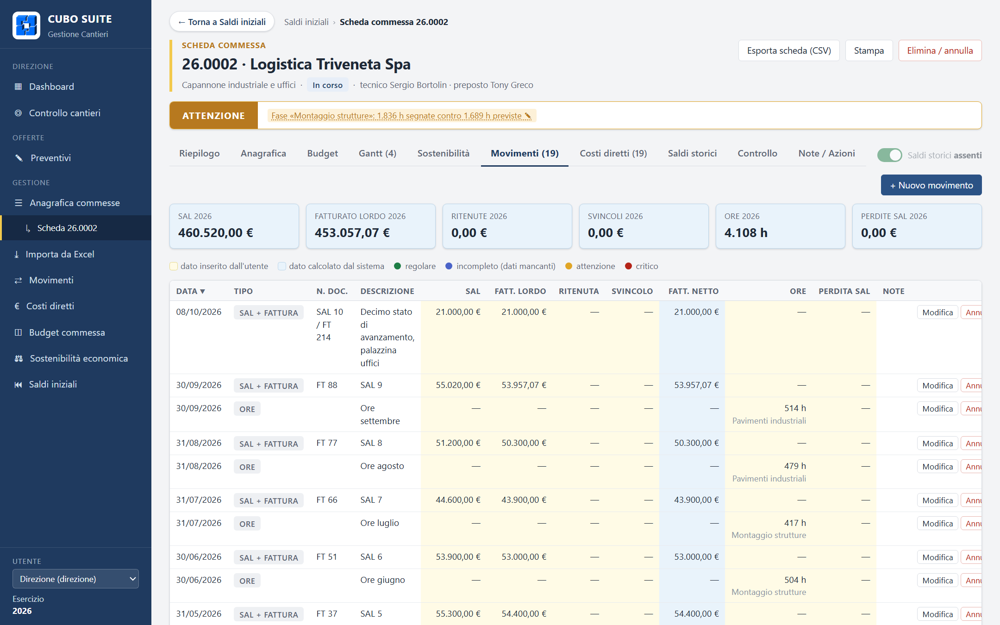
Tutti i numeri del controllo in tre colonne: valori economici cumulativi, tempo e ore, costi, con in fondo la composizione del cumulativo (saldo iniziale + esercizio). In testa sono ricordate le soglie in uso.
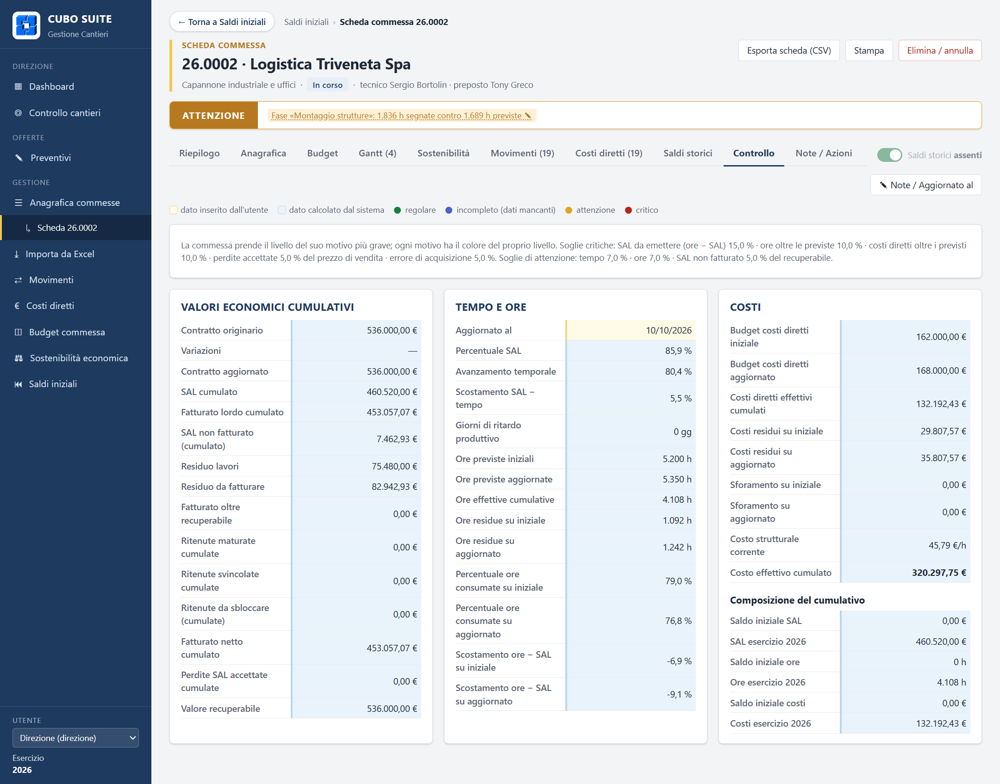
Contiene il campo libero Note / Azione della Direzione (es. «chiamare il cliente», «recuperare la ritenuta»), la data Aggiornato al e la storia delle modifiche di questa sola commessa.
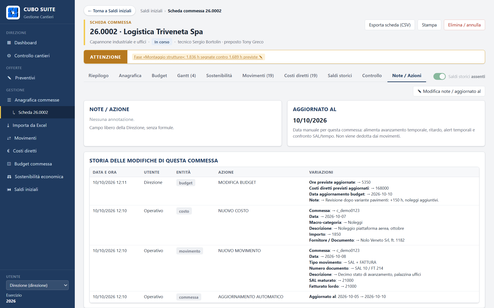
L'archivio cronologico unico di tutto ciò che accade alle commesse nell'esercizio: una riga = un evento con una data.
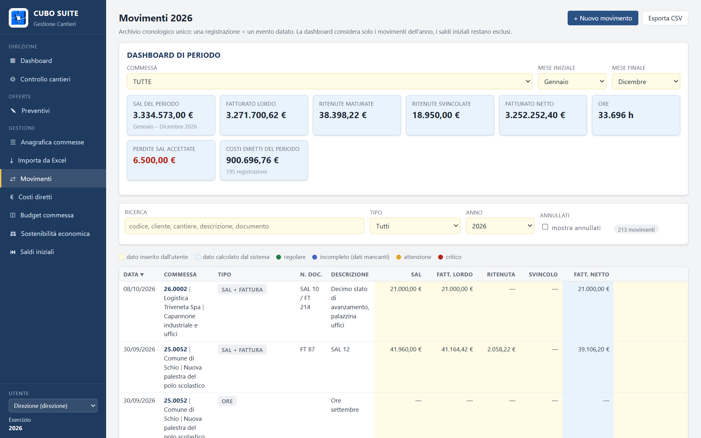
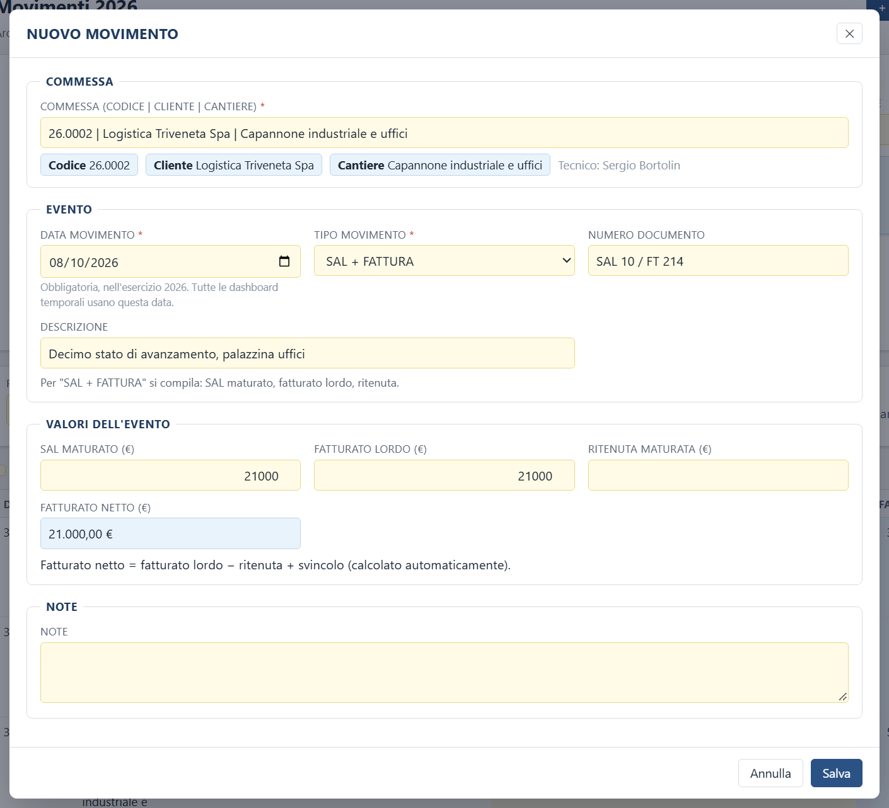
| Tipo | Valori da compilare | Quando si usa |
|---|---|---|
| SAL | SAL maturato | È maturato uno stato di avanzamento ma non è ancora stato fatturato |
| FATTURA | Fatturato lordo, ritenuta | Si fattura un SAL già registrato |
| SAL + FATTURA | SAL maturato, fatturato lordo, ritenuta | SAL e fattura nello stesso momento (il caso più comune) |
| SVINCOLO RITENUTA | Svincolo | Il cliente sblocca le ritenute a garanzia |
| ORE | Ore effettive, fase di lavoro | Ore di manodopera del periodo; la fase le collega al Gantt |
| PERDITA SAL ACCETTATA | Perdita SAL | Una parte di lavoro che si accetta di non poter recuperare dal cliente |
| ALTRO | Nessun valore | Un'annotazione datata, senza effetti sui numeri |
I riquadri in alto sommano i movimenti dell'anno per la commessa e l'intervallo di mesi scelti: SAL, fatturato lordo e netto, ritenute maturate e svincolate, ore, perdite, costi diretti. I saldi iniziali restano esclusi: qui si vede solo quello che è successo nell'esercizio.
Qui si registrano solo i costi specifici della commessa che non sono già compresi nel costo orario aziendale: materiali, noleggi, subappalti, trasporti, smaltimenti.
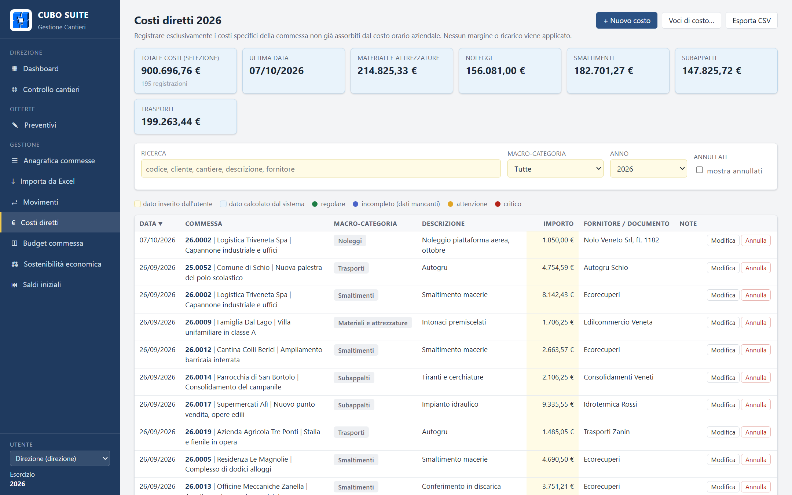
Premi + Nuovo costo, scegli la commessa, indica data, voce di costo (macro-categoria), importo, descrizione e fornitore o documento.
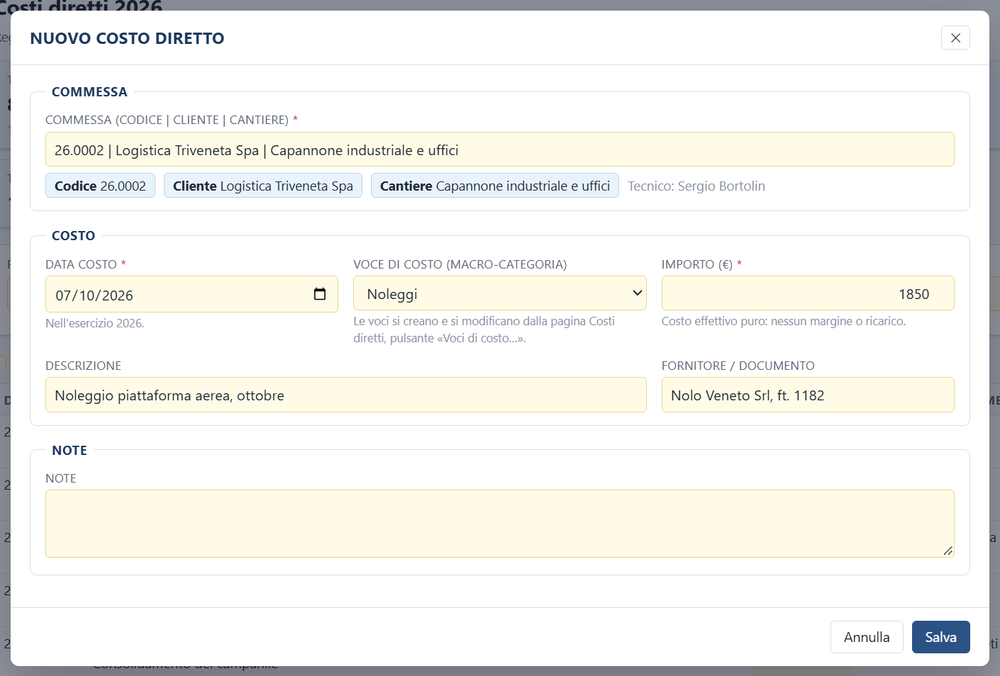
Come per i movimenti, un costo si modifica o si annulla (con motivo), mai si cancella. Il pulsante Voci di costo… (Direzione) permette di aggiungere o rinominare le macro-categorie.
Il budget è composto da due soli numeri inseriti a mano: ore previste e costi diretti previsti. Tutto il resto è calcolato.
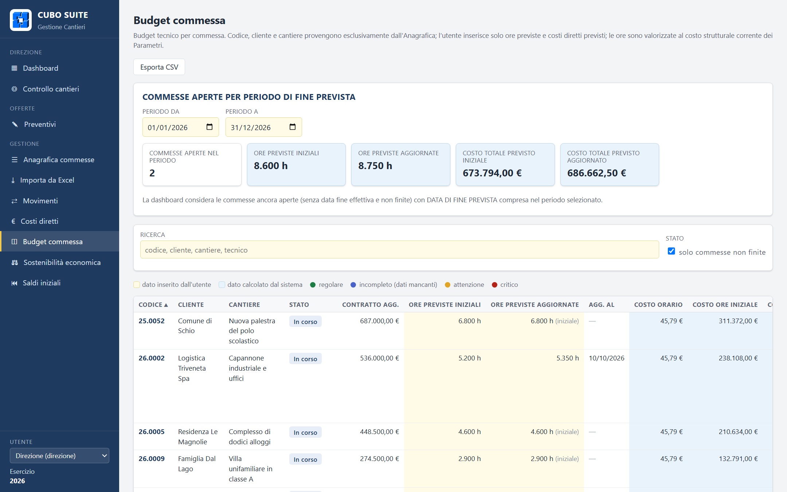
Il budget è sdoppiato:
Dalla scheda Budget della commessa premi ✎ Modifica budget (Direzione):
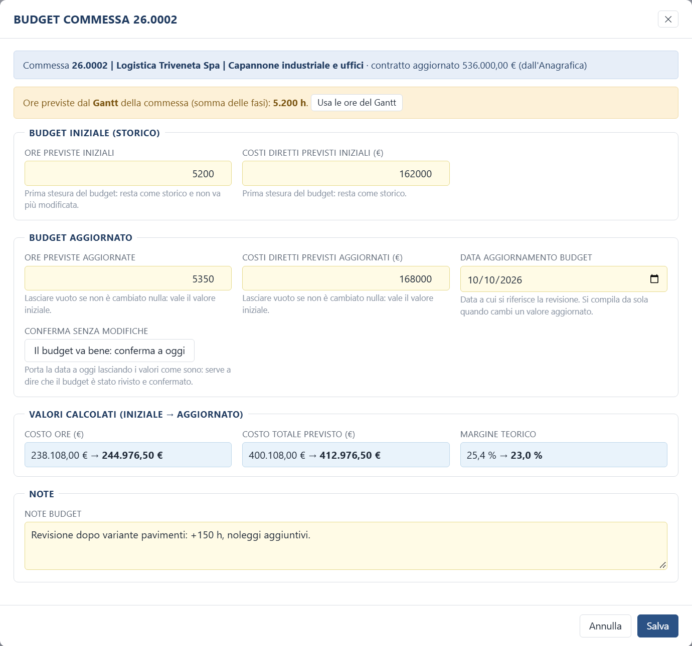
La verifica confronta il prezzo del computo (quello che il cliente paga) con il prezzo minimo sostenibile (quello sotto il quale l'azienda non copre costi, redditività e surplus economico).
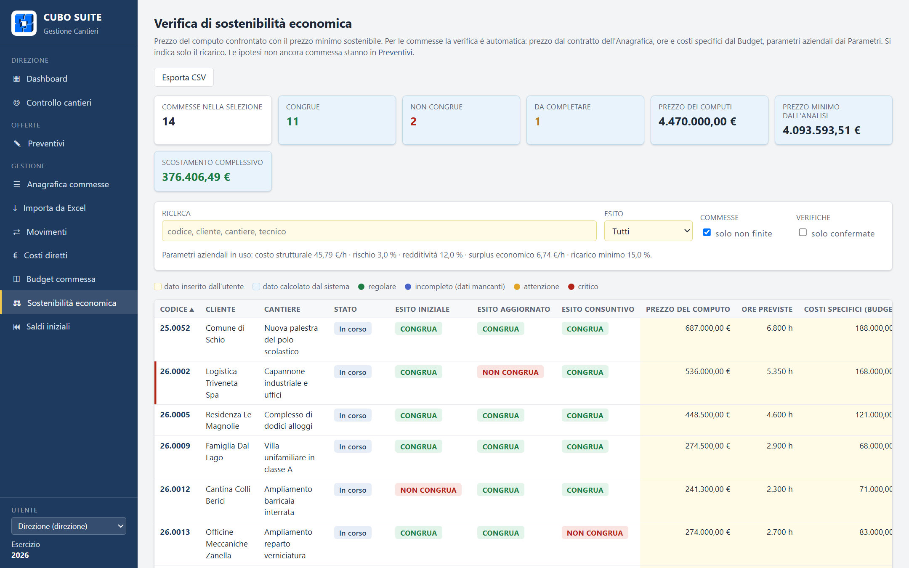
Il prezzo minimo è la somma di due parti.
| # | Passaggio | Calcolo |
|---|---|---|
| 1 | Costo orario attribuito alla commessa | ore previste × costo strutturale |
| 2 | Costo orario prudenziale | (1) × (1 + rischio strutturale) |
| 3 | … portato a redditività | (2) ÷ (1 − redditività) |
| 4 | Quota di surplus economico | ore previste × surplus economico per ora |
| 5 | Prezzo sostenibile della parte strutturale | (3) + (4) |
| 6 | Prezzo di vendita dei costi specifici | costi specifici × (1 + ricarico) ÷ (1 − redditività) |
| 7 | PREZZO MINIMO DALL'ANALISI | (5) + (6) |
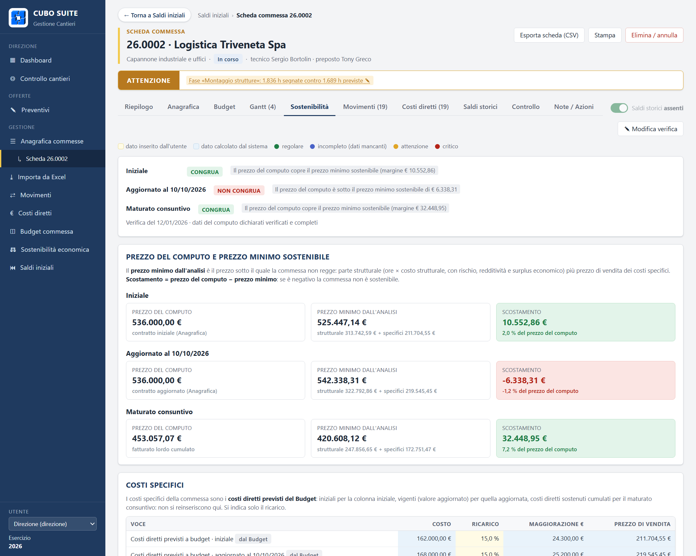
Non si reinserisce nulla: il prezzo del computo è il contratto dell'Anagrafica, ore e costi specifici sono quelli del Budget, rischio, redditività e surplus economico sono parametri aziendali già impostati. L'unico dato che si indica a mano, con ✎ Modifica verifica, è il ricarico sui costi specifici (se è vuoto vale la soglia minima della Direzione), insieme alla dichiarazione «dati verificati e completi» e alle note.
| Versione | Prezzo confrontato | Ore e costi usati |
|---|---|---|
| Iniziale | Contratto iniziale | Budget iniziale |
| Aggiornato | Contratto aggiornato | Budget vigente |
| Maturato consuntivo | Fatturato lordo cumulato | Ore consumate e costi diretti sostenuti |
Una commessa pregressa (iniziata prima del 1° gennaio dell'esercizio) arriva con dei valori già maturati. Il saldo iniziale li fotografa al 31 dicembre dell'anno precedente.
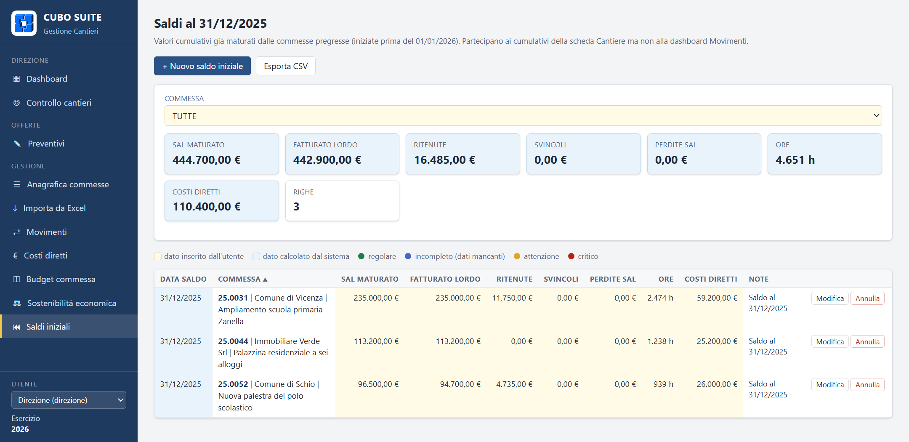
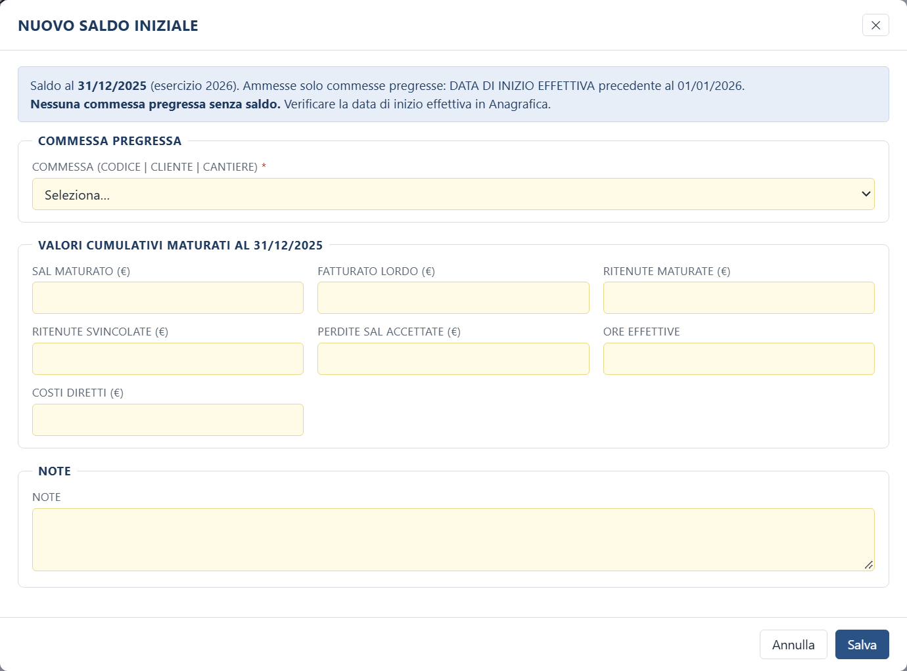
Per caricare o aggiornare molte commesse in una volta sola, con i loro saldi, movimenti e costi, partendo da un file Excel.
| Foglio | Contenuto | Come viene riconosciuta la riga |
|---|---|---|
| ISTRUZIONI | Guida e significato di ogni colonna | Non viene letto |
| COMMESSE | Una riga per commessa: anagrafica, budget, ricarico, note | Codice commessa: se non esiste la commessa viene creata, se esiste viene aggiornata |
| SALDI | Valori cumulativi al 31/12 delle pregresse | Codice + data saldo (sempre un 31 dicembre) |
| MOVIMENTI | Una riga per evento dell'esercizio | Colonna ID: con l'ID la registrazione viene corretta; con la cella vuota se ne crea sempre una nuova |
| COSTI | Una riga per costo dell'esercizio | |
| ELENCHI | Valori ammessi e suggerimenti | Solo consultazione |
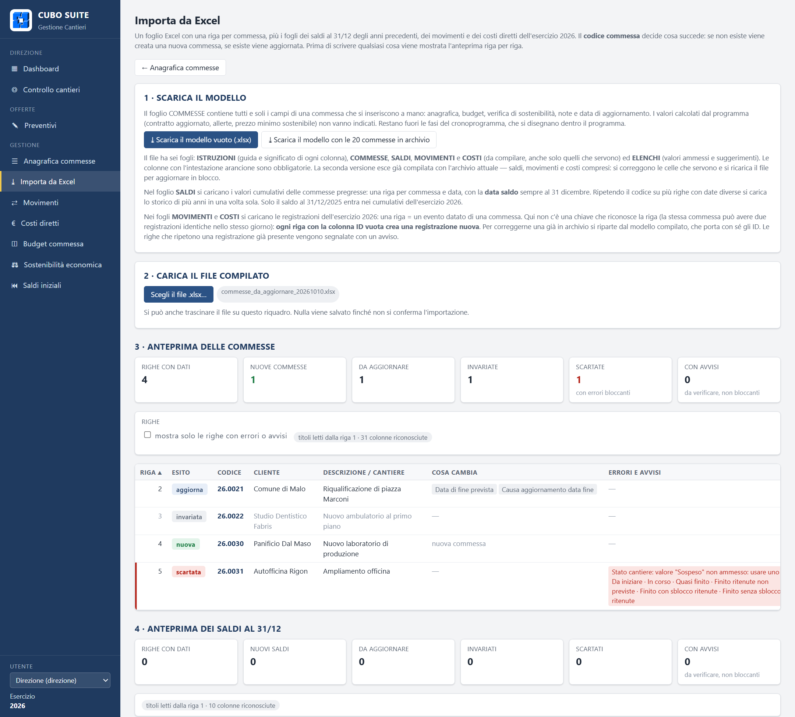
La pagina con cui si apre la Direzione: gli obiettivi dell'anno e a che punto siamo, in sei riquadri e un elenco.
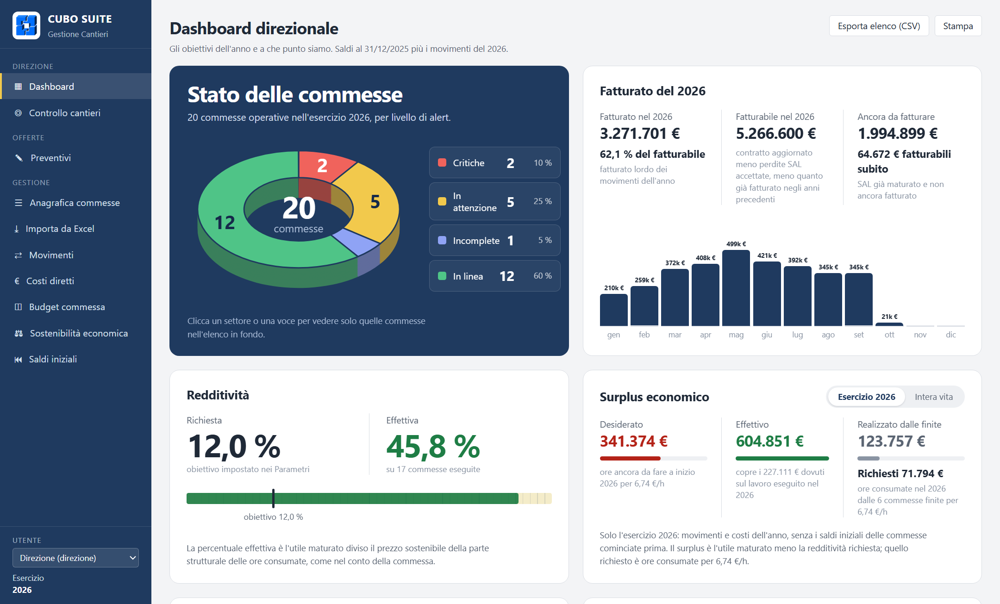
| Riquadro | Che cosa dice |
|---|---|
| Stato delle commesse | Il semaforo del portafoglio: quante commesse sono critiche, in attenzione, incomplete, in linea. Un clic su un settore o su una voce filtra l'elenco in fondo alla pagina |
| Fatturato dell'anno | Fatturato lordo dei movimenti dell'anno, quanto è fatturabile in totale e quanto è fatturabile subito (SAL maturato e non ancora fatturato), con l'andamento mese per mese |
| Redditività | La percentuale richiesta (obiettivo aziendale) contro quella effettiva: utile maturato diviso il prezzo sostenibile della parte strutturale delle ore consumate |
| Surplus economico | Desiderato, effettivo e realizzato dalle commesse finite. Il selettore passa da Esercizio a Intera vita delle commesse |
| Commesse finite | L'utile effettivo, commessa per commessa: barre verdi in utile, rosse in perdita |
| Commesse in corso | L'utile a finire previsto, per le commesse che pesano di più |
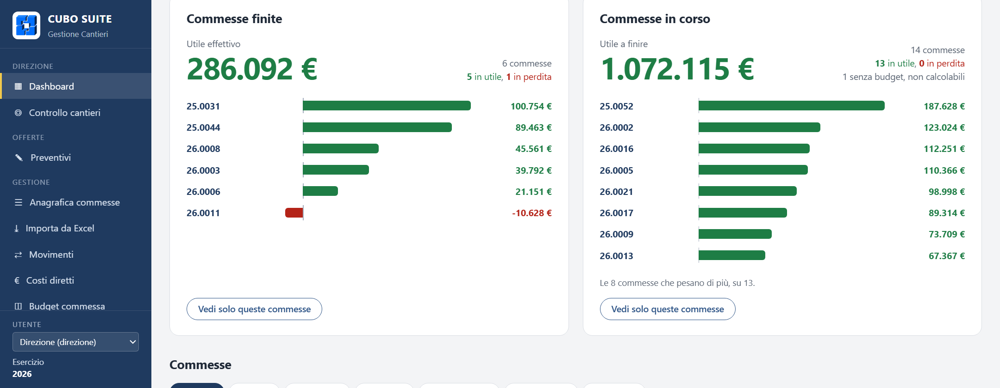
In fondo, la tabella di tutte le commesse con allerta, contratto, utile maturato, utile a finire, redditività effettiva e motivo dell'allerta. I pulsanti a pillola (Tutte, Finite, In corso, Critiche, In attenzione, Incomplete, In linea) la filtrano; un clic sul codice apre la scheda. Esporta elenco (CSV) scarica ciò che è filtrato.
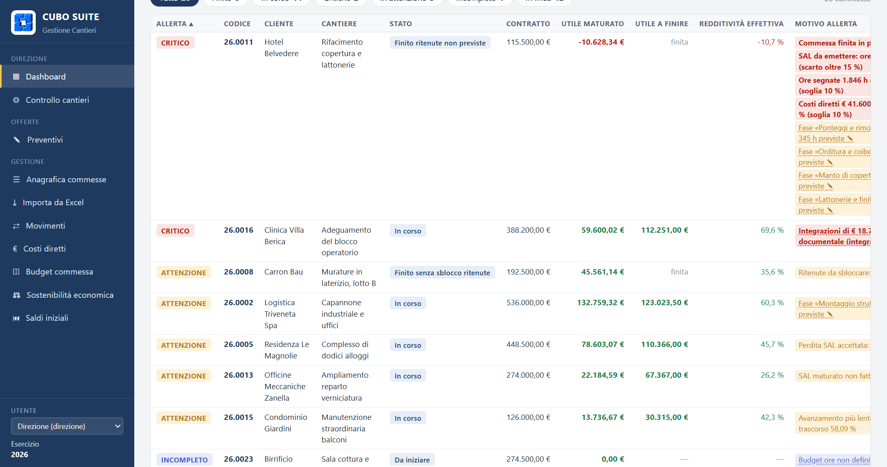
La pagina operativa della Direzione: la situazione reale di ogni commessa, saldi più movimenti dell'anno.
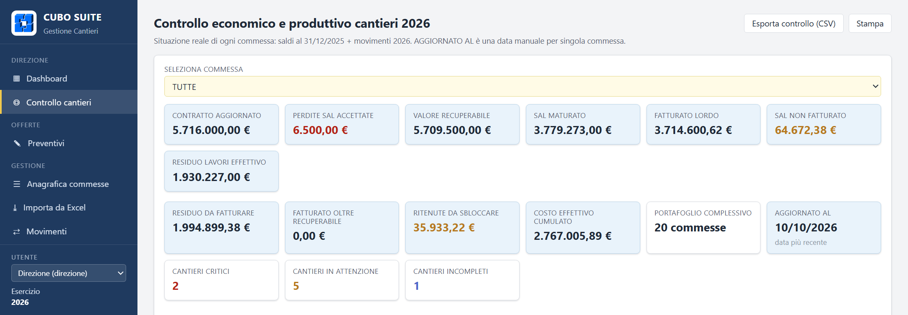
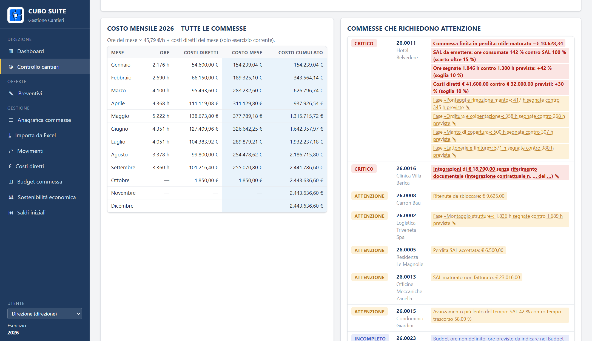
Sotto, la tabella completa: per ogni commessa allerta e motivo, anagrafica essenziale e tutti i valori di controllo. Si filtra per testo, per livello di allerta e con «solo non finite». Nell'ultima colonna la Direzione scrive le Note / Azione senza uscire dalla pagina.
Ogni commessa viene esaminata dal programma a ogni modifica. Ogni problema trovato è un motivo, con il suo livello; la commessa prende il livello del motivo più grave.
| Motivo | Quando scatta |
|---|---|
| Commessa finita in perdita | Stato «Finito…» e utile maturato negativo |
| Commessa in perdita a finire | L'utile a finire previsto è negativo |
| Errore di acquisizione | Prezzo venduto sotto il prezzo minimo sostenibile oltre la soglia |
| SAL da emettere | La percentuale di ore segnate supera la percentuale di SAL oltre la soglia: il SAL è in ritardo rispetto al lavoro fatto |
| Integrazioni senza riferimento documentale | Ci sono integrazioni ma manca il documento che le giustifica |
| Ore oltre le previste | Le ore segnate superano il budget oltre la soglia |
| Costi diretti oltre i previsti | I costi diretti superano il budget oltre la soglia |
| Perdite accettate oltre soglia | Le perdite SAL accettate superano la soglia sul prezzo di vendita |
Tutti gli altri problemi: fatturato oltre il valore recuperabile, perdita SAL accettata sotto soglia, ritenute da sbloccare, SAL maturato non fatturato oltre soglia, avanzamento più lento del tempo trascorso, consumo di ore superiore all'avanzamento, residuo lavori a cantiere finito, commessa finita senza data di fine effettiva, ore di una fase oltre le previste, ore o costi oltre il budget ma sotto la soglia critica.
Mancano date, contratto, budget (ore o costi diretti previsti), la data «aggiornato al», oppure il codice è ancora temporaneo. Non è un giudizio sull'andamento: è un promemoria.
| Che cosa succede | Che cosa fare |
|---|---|
| Il browser dice che la pagina non è raggiungibile | Controlla la connessione a internet e l'indirizzo. Se il problema resta, contatta chi ti ha fornito l'applicazione |
| Il browser continua a chiedere nome utente e password | Le credenziali non sono corrette: attenzione a maiuscole e minuscole |
| Non vedo la Dashboard nel menu | Il ruolo scelto non la prevede: cambia utente dalla tendina in basso a sinistra |
| Non riesco a salvare un movimento: «data fuori esercizio» | La data deve cadere nell'anno in gestione. I valori degli anni precedenti vanno nei Saldi iniziali |
| Una commessa non compare fra quelle selezionabili | È annullata oppure è stata definita a fine anno, alla chiusura dell'esercizio: non accetta più movimenti |
| La commessa è «INCOMPLETO» ma i lavori vanno bene | Mancano dati: apri la scheda, i motivi in bluette dicono quali (di solito budget o date) |
| Non vedo quello che ha inserito un collega | Ricarica la pagina (tasto F5) |
| L'importazione da Excel non legge il file | Il browser è troppo vecchio oppure il file non è un .xlsx: aggiornare il browser e salvare da Excel in formato .xlsx |
| Commessa | Un lavoro acquisito, identificato da codice, cliente e cantiere |
| Commessa pregressa | Commessa con data di inizio effettiva precedente al 1° gennaio dell'esercizio in gestione |
| Esercizio | L'anno in gestione: movimenti e costi si registrano solo in quell'anno |
| SAL | Stato di avanzamento lavori: il valore di quanto è stato prodotto e riconosciuto |
| SAL non fatturato | SAL maturato ma non ancora fatturato: è «fatturabile subito» |
| Ritenuta | Quota di fattura trattenuta dal cliente a garanzia, restituita con lo svincolo |
| Perdita SAL accettata | Lavoro che si rinuncia a farsi riconoscere: riduce il valore recuperabile |
| Contratto aggiornato | Contratto iniziale + integrazioni / varianti |
| Valore recuperabile | Contratto aggiornato − perdite SAL accettate |
| Residuo lavori | Quanto resta da produrre: valore recuperabile − SAL cumulato |
| Costi diretti | Costi specifici della commessa non compresi nel costo orario (materiali, noleggi, subappalti…) |
| Costo strutturale orario | Il costo di un'ora di lavoro per l'azienda, comprensivo di personale e spese generali |
| Costo effettivo cumulato | Ore effettive × costo strutturale + costi diretti |
| Budget | Ore previste e costi diretti previsti, in versione iniziale e aggiornata |
| Ricarico | Maggiorazione percentuale applicata ai costi specifici nella verifica di sostenibilità |
| Redditività | Margine che l'azienda vuole conservare sul prezzo |
| Surplus economico | Quota per ogni ora di lavoro che l'azienda vuole ricavare in più, oltre ai costi e alla redditività |
| Prezzo minimo sostenibile | Il prezzo sotto il quale la commessa non copre costi, redditività e surplus economico |
| Utile a finire | L'utile previsto a commessa conclusa, con il budget vigente |
| Saldo iniziale | I valori cumulati di una commessa pregressa al 31/12 dell'anno precedente |
| Commessa definita | Commessa finita, tolta dal portafoglio operativo alla chiusura dell'esercizio di fine anno |
| Aggiornato al | Data dell'ultimo aggiornamento dei dati della commessa |